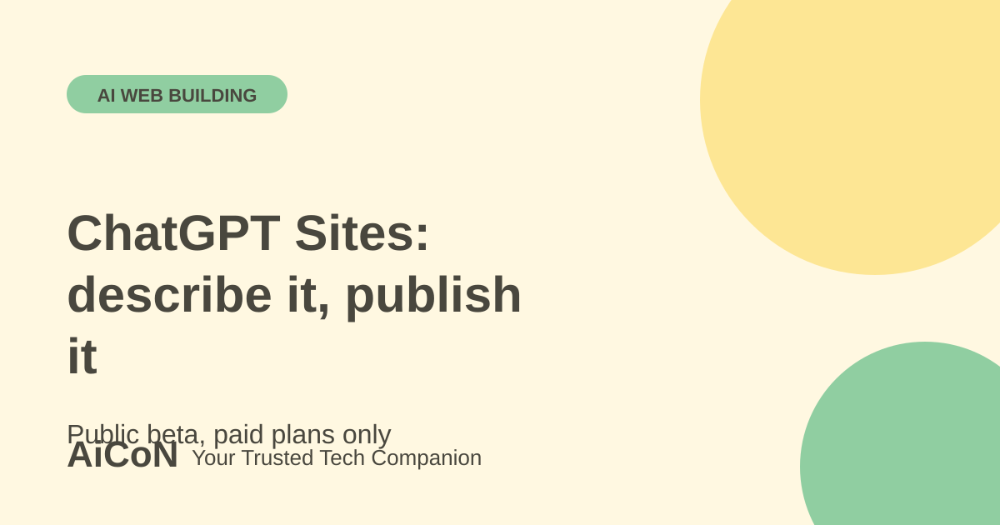

ChatGPT Sites: build and publish a website from chat
ChatGPT Sites lets you describe a website or a small web app, preview it and publish it to a live link. It is in public beta for ChatGPT workspaces, Plus and Pro accounts. Read the limits before you publish anything public.

What is ChatGPT Sites?
According to OpenAI's help center, ChatGPT Sites lets you create, preview, publish and share interactive websites and lightweight apps. You describe what you want, ChatGPT builds it, shows you a private preview and changes it based on your feedback. OpenAI lists examples such as dashboards, project trackers, launch calendars, prototypes, internal portals and reports.
Who can use it?
| Available to | ChatGPT workspaces, Plus and Pro accounts, in public beta. |
|---|---|
| Not available | Free and Go plans. Also not available in the EEA, Switzerland or the United Kingdom at launch. Rollout may still be reaching your account. |
| Price | Sites usage is included up to plan-specific beta limits. We give no rupee figure here. Check the plan price and limits in your own ChatGPT account before you upgrade. |
| Enterprise | An admin must turn Sites on. Public publishing is off by default. Custom domains are not available in Enterprise workspaces at launch. |
How to build and publish a site, step by step
- Open ChatGPT on the web and select Work. In the desktop app, select ChatGPT and then Work, or select Codex.
- Describe the website. Include the word "website" or mention @Sites. Add the text, files, data, links and rules you want it to use.
- Review the preview. Ask for changes until you are happy.
- Save a version before you deploy. OpenAI says every deployment URL is a production URL, so deploying updates the live site.
- Open Share and choose who can see it. A new Site is limited to its owner and workspace admins until you change access. "Anyone on the internet" makes it public and works only when public publishing is enabled.
- Select Publish. Use Visit to open the live site and Copy link to share it.
- To take it down, restrict access in Share settings, or use Delete site. Deletion is permanent.
Using your own domain
Where custom domains are offered, Sites does not register a domain for you. You must already own the domain and be able to edit its DNS records. In the site settings, choose Add domain, enter the domain, add the DNS records Sites shows at your domain provider, wait a few minutes and refresh the status.
Limits and what not to build
- Beta limits apply across all your Sites and may change. If you reach one, you may be unable to create a new Site or keep a heavily used Site public. You can still edit existing Sites.
- Some frameworks, private networks, databases and background services may not be supported.
- OpenAI says Sites must not process sensitive data such as protected health information or card data, except through a third-party payment processor. They must not target children under 13 or break OpenAI's usage policies.
- To sell things, you must use a third-party payment processor. You are responsible for orders, refunds, delivery and support.
- Sites does not support data residency or inference residency at launch.
Privacy: check your settings
Your Site chats follow your usual ChatGPT data controls. For Plus and Pro users, OpenAI says conversations may be used to train models if "Improve the model for everyone" is on. For Business and Enterprise or Edu, OpenAI says conversations and Site information are not used for training by default. Check this setting before you upload private files.
Ideas for readers in Kerala
A school club, a local event, a small shop menu, a class timetable or a simple portfolio can work well as a quick Site. Before you publish, check the page on a phone, confirm names, dates, prices and phone numbers by hand, and do not include other people's personal details without permission.
What changed since the short post?
This expanded guide uses the current public-beta help page. Plan, region, sharing and custom-domain limits matter more than a headline about building a website from a prompt.
Frequently asked questions
Can I use ChatGPT Sites on a free account?
No. OpenAI says Sites is not available on Free or Go.
Why can't I see Sites?
It may still be rolling out to your account. In a workspace, an admin may control who can create and publish. Check your plan, region and the workspace you are signed in to.
Can I preview without going live?
Yes. ChatGPT gives you a private preview first. Save a version and deploy only after you review it.
Can visitors give me personal details through a form?
OpenAI tells owners to review features that collect personal information before sharing. Do this carefully, and avoid collecting sensitive data.
Sources: OpenAI Help Center: Creating and managing ChatGPT Sites. Checked 6 October 2026.